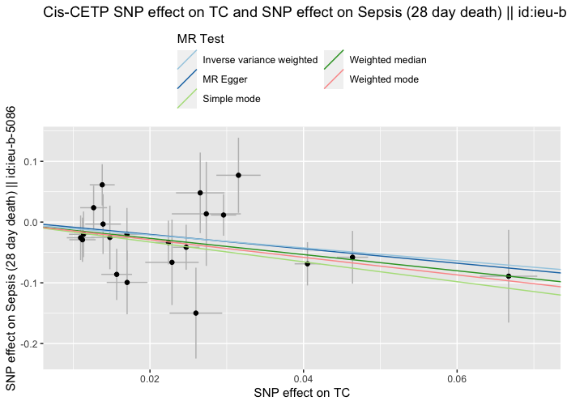
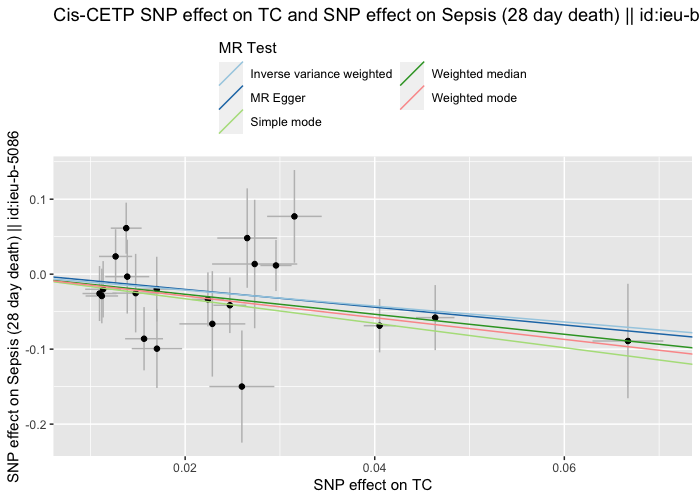

Genetically Proxied Lipid Therapy And Sepsis
MRLipidInfection.RmdInstallation
You can install the latest version of MRLipidInfection in R using:
remotes::install_github("nicksunderland/MRLipidInfection")Setup MRLipidInfection package
First we need to load the MRLipidInfection package and setup package
requirements by calling setupMRLipidInfection(). At the
first installation this will take some time as this will download the 1000 genomes LD
reference panel into the package file structure and ensure that PLINK is installed
locally. If you plan to use only the Bristol IEU servers for LD
processing you can skip these downloads.
library(MRLipidInfection)
setupMRLipidInfection(skip_local_download=TRUE)Configuration file
The column names in any given GWAS file may not be consistent with
the TwoSampleMR package naming conventions.
TwoSampleMR provides the function
TwoSampleMR::format_data to appropriately rename the
columns, as well as extra data checking and imputation processing. To
configure this correctly we need to provide a column mapping
config.yml file to the constructor of this package’s
GWAS class. An example of the config.yml
structure can be opened in R with the
get_default_gwas_config() command - a copy of this should
be saved and adjusted as needed.
# File path to the config file; set open_file=TRUE to also open the file in RStudio
fp <- get_default_gwas_config(open_file=FALSE)
fp
#> [1] "/home/runner/work/_temp/Library/MRLipidInfection/extdata/config/default_gwas.yml"
# Set the config file for the GLGC GWAS data
config <- system.file("extdata/config/glgc_gwas.yml", package = "MRLipidInfection")
config
#> [1] "/home/runner/work/_temp/Library/MRLipidInfection/extdata/config/glgc_gwas.yml"
# View the structure of the default config file
knitr::kable(data.frame("old_name" = unname(unlist(yaml::read_yaml(fp))),
"new_name" = names(yaml::read_yaml(fp))))| old_name | new_name |
|---|---|
| exposure | type |
| Phenotype | phenotype_col |
| SNP | snp_col |
| beta | beta_col |
| se | se_col |
| eaf | eaf_col |
| effect_allele | effect_allele_col |
| other_allele | other_allele_col |
| pval | pval_col |
| units | units_col |
| ncase | ncase_col |
| ncontrol | ncontrol_col |
| samplesize | samplesize_col |
| gene | gene_col |
| id | id_col |
| z | z_col |
| info | info_col |
| chr | chr_col |
| pos | pos_col |
Exposure data
Lipid profile data
Next we must obtain the data for the exposure. We are interested whether exposure to lipid lowering medications influences risk of developing sepsis. This exact data is not readily available on a population level and has many confounding factors. We will therefore estimate the effect of genetically proxied lipid medication therapy by looking for Single Nucleotide Polymorphisms (SNPs) in close proximity to known lipid metabolism genes (HMG-CoA Reductase, NPC1L1, PCSK9, CETP) that are significantly associated with circulating lipid levels.
We will use the the latest Global Lipids Genetics Consortium Ancestry-specific GWAS summary statistics for the lipid components: HDL-C, LDL-C, nonHDL-C, TC and TG.
As we will be using sepsis outcome data from the UK BioBank we will use the data excluding the UK BioBank to avoid overlap of the exposure and outcome populations.
# List the URLs of the data sources
urls_lst <- list(
"LDL" = "http://csg.sph.umich.edu/willer/public/glgc-lipids2021/results/ancestry_specific/without_UKB_LDL_INV_EUR_HRC_1KGP3_others_ALL.meta.singlevar.results.gz",
"HDL" = "http://csg.sph.umich.edu/willer/public/glgc-lipids2021/results/ancestry_specific/without_UKB_HDL_INV_EUR_HRC_1KGP3_others_ALL.meta.singlevar.results.gz",
"TC" = "http://csg.sph.umich.edu/willer/public/glgc-lipids2021/results/ancestry_specific/without_UKB_TC_INV_EUR_HRC_1KGP3_others_ALL.meta.singlevar.results.gz",
"nonHDL" = "http://csg.sph.umich.edu/willer/public/glgc-lipids2021/results/ancestry_specific/without_UKB_nonHDL_INV_EUR_HRC_1KGP3_others_ALL.meta.singlevar.results.gz",
"TG" = "http://csg.sph.umich.edu/willer/public/glgc-lipids2021/results/ancestry_specific/without_UKB_logTG_INV_EUR_HRC_1KGP3_others_ALL.meta.singlevar.results.gz"
)We create a custom GWAS object for each lipid component.
Internally, the GWAS object reads in the data file provided through the
parameter file_path. If file_path is a URL
then the file is first downloaded into the package downloads directory
and extracted.
##Example GWAS object
test_filepath <- system.file("testdata", "test_data.csv", package="MRLipidInfection")
test_config <- system.file("testdata", "test_config.yml", package="MRLipidInfection")
testGWAS <- GWAS(file_path = test_filepath,
config = test_config,
name = "test",
type = "exposure")
## GWAS object structure
str(testGWAS)
#> Formal class 'GWAS' [package "MRLipidInfection"] with 10 slots
#> ..@ type : chr "exposure"
#> ..@ name : chr "test"
#> ..@ file_path: chr "/home/runner/work/_temp/Library/MRLipidInfection/testdata/test_data.csv"
#> ..@ config : chr "/home/runner/work/_temp/Library/MRLipidInfection/testdata/test_config.yml"
#> ..@ overwrite: logi FALSE
#> ..@ sig_pval : num 5e-08
#> ..@ col_map :List of 13
#> .. ..$ type : chr "exposure"
#> .. ..$ phenotype_col : chr "Phenotype"
#> .. ..$ snp_col : chr "SNP"
#> .. ..$ beta_col : chr "beta"
#> .. ..$ se_col : chr "se"
#> .. ..$ eaf_col : chr "eaf"
#> .. ..$ effect_allele_col: chr "effect_allele"
#> .. ..$ other_allele_col : chr "other_allele"
#> .. ..$ pval_col : chr "pval"
#> .. ..$ samplesize_col : chr "samplesize"
#> .. ..$ id_col : chr "id"
#> .. ..$ chr_col : chr "chr"
#> .. ..$ pos_col : chr "pos"
#> ..@ data :Classes 'data.table' and 'data.frame': 9 obs. of 15 variables:
#> .. ..$ SNP : chr [1:9] "rs1123571" "rs903911" "rs6698680" "rs6685829" ...
#> .. ..$ chr.exposure : int [1:9] 1 1 1 1 1 1 1 1 1
#> .. ..$ pos.exposure : int [1:9] 2326009 2326812 2329661 2330016 2330190 2332391 2338126 2339139 2339427
#> .. ..$ other_allele.exposure : chr [1:9] "G" "A" "A" "C" ...
#> .. ..$ effect_allele.exposure: chr [1:9] "A" "G" "G" "T" ...
#> .. ..$ samplesize.exposure : int [1:9] 808038 810508 810507 808046 813372 821075 810363 787211 787211
#> .. ..$ eaf.exposure : num [1:9] 0.473 0.474 0.474 0.499 0.473 0.469 0.449 0.441 0.412
#> .. ..$ beta.exposure : num [1:9] -0.0111 -0.0108 -0.0107 -0.0106 -0.0109 ...
#> .. ..$ se.exposure : num [1:9] 0.00169 0.00169 0.00169 0.00169 0.00169 ...
#> .. ..$ pval.exposure : num [1:9] 5.26e-11 1.45e-10 2.32e-10 3.00e-10 1.13e-10 ...
#> .. ..$ id.exposure : chr [1:9] NA NA NA NA ...
#> .. ..$ exposure : chr [1:9] "LDL" "LDL" "LDL" "LDL" ...
#> .. ..$ mr_keep.exposure : logi [1:9] TRUE TRUE TRUE TRUE TRUE TRUE ...
#> .. ..$ pval_origin.exposure : chr [1:9] "reported" "reported" "reported" "reported" ...
#> .. ..$ gene.exposure : chr [1:9] NA NA NA NA ...
#> .. ..- attr(*, ".internal.selfref")=<externalptr>
#> ..@ use_flag : logi [1:9] TRUE TRUE TRUE TRUE TRUE TRUE ...
#> ..@ gen_reg :Formal class 'GenomeRegion' [package "MRLipidInfection"] with 12 slots
#> .. .. ..@ genome_wide: logi TRUE
#> .. .. ..@ name : chr NA
#> .. .. ..@ assembly : chr "GRCh37"
#> .. .. ..@ chromosome : num NA
#> .. .. ..@ start : num NA
#> .. .. ..@ end : num NA
#> .. .. ..@ cis_tol : num 3e+05
#> .. .. ..@ clump_r2 : num 0.001
#> .. .. ..@ clump_kb : num 10000
#> .. .. ..@ clump_p1 : num 1
#> .. .. ..@ clump_p2 : num 1
#> .. .. ..@ pop : chr "EUR"Warning The GLGC GWAS data files are large and will
take some time to download. However, creating further GWAS
objects with the same file_path will result in much quicker
loading as the class first checks whether the file has already been
downloaded. There are more than 47 million SNPs in the datasets. We need
to filter the GWAS data SNPs associated with circulating lipid levels at
a statistical significance of p<5e-8. This threshold is
passed to the GWAS object at instantiation. Internally, the
GWAS caches the filters SNPs to a .csv file within the
package structure. This is loaded instead if the command is re-run
(behaviour that can be overridden by passing overwrite=TRUE
to the GWAS constructor).
Cis-acting lipid metabolism gene SNPs
We will create a set of exposure SNPs that will be subset of the SNPs that associate with the 5 lipid components: HDL-C, LDL-C, nonHDL-C, TC and TG. This subset of SNPs will be in close proximity to the genes of interest (HMG-CoA Reductase, NPC1L1, PCSK9, CETP). Data regarding the positions of the genes is available online.
The latest lipid data from the GLGC uses the Genome Reference Consortium Human Reference 37 (GRCh37) Assembly and so we must use this when referring to the position of the genes.
First, we create a list of objects of class GenomeRegion
- this is a simple custom S4 class containing gene information. In
addition, we will look at all of the SNPs across the whole genome that
associate with lipid profile components (set
genome_wide=TRUE). Each GWAS object has an
internal slot for a GenomeRegion object from which it will
determine the appropriate SNP filtering (e.g. keeping only SNPs around a
certain genome region / gene).
# The HMG-CoA-R, NPC1L1, and PCSK9 genes; set the 'cis' base tolerance here.
genome_regions_lst = list(
GenomeRegion(name="HMGCR", genome_wide=FALSE, chromosome=5, start=74632993, end=74657941, cis_tol=1e5, clump_r2=0.2),
GenomeRegion(name="NPC1L1", genome_wide=FALSE, chromosome=7, start=44552134, end=44580929, cis_tol=1e5, clump_r2=0.2),
GenomeRegion(name="PCSK9", genome_wide=FALSE, chromosome=1, start=55505221, end=55530525, cis_tol=1e5, clump_r2=0.2),
GenomeRegion(name="CETP", genome_wide=FALSE, chromosome=16, start=56995862, end=57017757, cis_tol=1e5, clump_r2=0.2),
GenomeRegion(name="GenomeWide", genome_wide=TRUE, clump_r2=0.001)
)Next we create exposure data for each lipid component
GWAS and each GenomeRegion. Hence there will
be n = length(lipids_gwas_lst) x
length(genome_regions_list) exposure datasets.
Clumping SNPs
Many of the SNPs will be highly correlated, i.e. be genetically linked and provide no additional information over and above the whole set of correlated SNPs. To reduce the number of SNPs to only those most significantly associated with lipid levels we use Linkage Disequilibrium clumping. Clumping reports the most significant genetic associations in a region in terms of a smaller number of “clumps” of genetically linked SNPs.
SNPs that are correlated with an R2 greater than some
value, clump_r2, will be clumped - i.e. the SNP with the
lower p-value will be removed. The process is iterative and has several
parameters: clump_kb, clump_r2,
clump_p. We will use the defaults, except for
clump_r2 with the, which we will set more leniently,
instead of the default of 0.001, due to the fact we are looking at
cis-acting SNPs which will be more correlated by virtue of their
proximity to the genes of interest. Clumping parameters are passed in as
part of the GenomeRegion object (above).
We could do this on the Bristol IEU severs using the function
TwoSampleMR::clump_data.
# Run clumping
lipid_gene_perms_clump_lst <- purrr::map(lipid_gene_perms_lst, clump_snps)
purrr::map_int(lipid_gene_perms_clump_lst, ~sum(.x@use_flag))Outcome data
Sepsis
The outcome we are interested in is sepsis. There are several GWAS
relating whether a patient develops sepsis to their underlying SNPs.
Several of these studies are available on the IEU GWAS database which can be
queried using either the TwoSampleMR or
ieugwasr R packages.
# List of available GWAS summary statistics
available_gwas <- ieugwasr::gwasinfo() |>
# Filter for those that mention 'sepsis' in the 'trait' description column
dplyr::filter(grepl("sepsis|pneumonia", .data$trait, ignore.case=TRUE))
# We will pick a few sepsis GWAS
outcome_gwas_id <- c("ieu-b-5086", "ieu-b-5088", "ieu-b-4982",
"ieu-b-4980", "ieu-b-4981", "ieu-b-69")Extracting outcome data
Having identified the GWAS summary statistics we next need to extract the data for our SNPs of interest (those that are highly predictive of the exposure, in this case the components of the blood lipid profile).
# Extract data for cis-gene SNPs
outcome_data <- purrr::map(.x = lipid_gene_perms_clump_lst,
.f = ~ TwoSampleMR::extract_outcome_data(
snps = .x@data$SNP[.x@use_flag],
outcomes = outcome_gwas_id,
proxies = TRUE,
rsq = 0.8,
align_alleles = 1,
palindromes = 1,
maf_threshold = 0.3,
access_token = ieugwasr::check_access_token(),
splitsize = 10000,
proxy_splitsize = 500))Harmonising
We have the effects of the (significant) SNPs on lipid levels and the effect of these same SNPs on the outcome sepsis. However, it is important to harmonise the effects. This means that the effect of a SNP on the exposure and the effect of that SNP on the outcome must each correspond to the same allele (i.e. the A&Ts and C&Gs cannot be the wrong way round). Note The IEU GWAS database contains data that is already harmonised. For more information on harmonising.
# Filter out the Gene:Lipid SNP associations with no significant SNPs
zero_snps <- purrr::map_lgl(lipid_gene_perms_clump_lst, ~ sum(.x@use_flag)==0)
# Harmonise the data for the LDL SNPs across the whole genome
harm_dat <- purrr::map2(.x = lipid_gene_perms_clump_lst[!zero_snps],
.y = outcome_data[!zero_snps],
.f = ~ TwoSampleMR::harmonise_data(.x@data, .y))Two Sample Mendelian Randomisation
# The MR result for all of the different scenarios
res_dat <- purrr::map(.x = harm_dat,
.f = ~ TwoSampleMR::mr(.x)) %>%
# Clean up the nameEffects and significance
# Prepare the data
plot_dat <- purrr::map_df(res_dat, ~ .x |>
dplyr::select(id.exposure, exposure, outcome, method, b, pval) |>
dplyr::rename(c("gene" = id.exposure, "lipid" = exposure)) |>
dplyr::mutate(dplyr::across(c("gene", "lipid", "outcome"), ~as.factor(.x)))) |>
# Ensure present in the data, even if NA
tidyr::complete(gene, lipid, outcome, method) |>
# Just look at IVW for now
dplyr::filter(method == "Inverse variance weighted", ) |>
# Deselect to make table nicer
dplyr::select(-method)Plots
Heatmap
library(ggplot2)
# Set the significance cutoff
p_val_cutoff = 0.05
# Plot heat map of lipid component against lipid regulation genes
p <- ggplot(plot_dat, aes(x=lipid, y=gene)) +
# Set the fill tile colour to the p-value
geom_tile(aes(fill=pval)) +
# Set the text to the beta value
geom_text(aes(label = paste("\u03B2", round(b, 3)))) +
# Set the text to the p value
geom_text(aes(label = paste("p =", round(pval, 3))), nudge_y=-0.15, size=3.5, fontface = "italic") +
# Ensure a very sharp colour transition at <0.05 --> green
# Bottom 5% colour scale is green; top 95% colour scale is viridis gradient
scale_fill_gradientn(colors = c(rep("green",50),
scales::viridis_pal(option = "mako", begin=1, end=0.2)(950)),
values = seq(0,1, length.out=1000),
# Set limits to ensure that default min(data)/max(data) is not used
limits = c(0, 1),
breaks = c(1.0, 0.75, 0.50, 0.25, p_val_cutoff),
labels = scales::label_number(accuracy = 0.01)) +
labs(title ="MR estimate by lipid metabolism gene and lipid profile component",
subtitle = "Colour represents p-value, with bright green colour at cut-off p<0.05",
x ="Lipid component",
y = "Gene") +
facet_wrap(~outcome, ncol = 1, scales='free')


 
